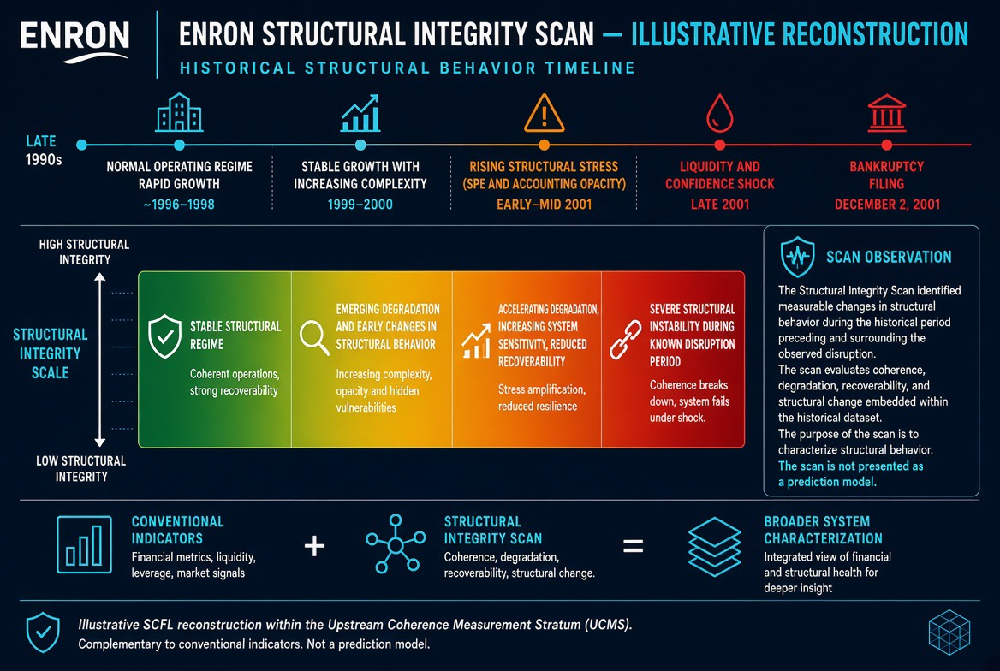
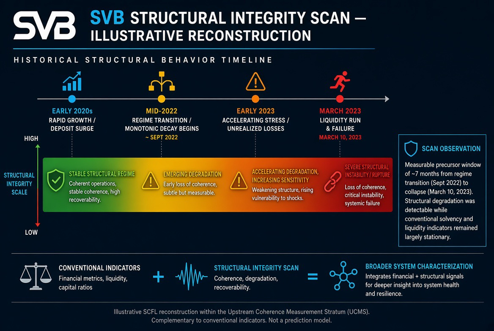

Structural Integrity Scans
Cases
Public reconstructions of systems in which relational integrity was lost while conventional performance indicators remained stationary.
-
Enron Corporation — SCFL Reconstruction
Seam-masked rupture: precursor window opened ~1997 across reporting, governance, auditor, and liquidity layers. By August 2001 the structural geometry had crossed irreversibility while surface metrics still looked strong. The market saw revenue; the SCFL would have seen seam shear.
-
2023 Regional Bank Failures — Cluster Case
SVB, Signature, and First Republic: three distinct seam profiles, one shared precursor geometry. Measurable seam initiation in 2020–2021; rate environment activated rather than created the seams. Confidence held the deposit bases; structural coherence did not.
More reconstructions (ERCOT and others) will be added as they are prepared for public release.